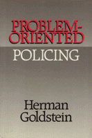

A conceptual framework for studying the police and for planning improvements in police operations
A conceptual framework for studying the police and for planning improvements in police operations


 A conceptual framework for studying the police and for planning improvements in police operations
A conceptual framework for studying the police and for planning improvements in police operations

|  |
Problem-Oriented PolicingHerman Goldsteincloth EAN: 978-0-87722-719-9 (ISBN: 0-87722-719-5) |
In this book, one of the foremost authorities on policing in America presents a conceptual framework for studying the police and for planning improvements in police operations. Arguing that most new proposals for improving policing concentrate on means rather than ends (i.e., structure, staffing, and equipment), Herman Goldstein insists that police reform must have a more ambitious goal in order to fulfill the complex needs of a free and diverse society.
Claiming that "law enforcement officer" is a misnomer for a police officer, Goldstein suggests that instead of maintaining the simplistic notion that criminal law defines the police role, one must analyze the varied problems police handle and develop the most effective means for dealing with each troublesome situation. The full significance of this change in perspective is illustrated by the current drug crisis. Merely enforcing criminal law has proven futile in most cases, the size of the problem overwhelming the police resources. "The current crisis is gradually forcing a recognition—on the part of both the public and the police—that much more is required than simply law enforcement."
In its broadest context, problem-oriented policing is a new way of thinking about policing that has implications for every aspect of the police organization, its personnel, and its operations. With an ever-present concern about the end product of policing as the central theme, the problem-oriented form seeks to tie together the many elements involved in effecting change in the police so that these changes are coordinated and mutually supportive. It connects with the current move to redefine relationships between the police and the community.
In explaining this problem-oriented approach and discussing obstacles to its application, Goldstein provides case studies of police agencies that were among the first to implement his concept: Baltimore County, Maryland; Newport News, Virginia; Madison, Wisconsin; New York City; and London. He identifies several factors that have contributed most directly to development of the problem-oriented approach to improvement. And he describes the numerous changes that will be required in the management of a police agency should a problem-oriented approach be adopted.
Herman Goldstein is Evjue-Bascom Professor in Law at the University of Wisconsin Law School in Madison and the author of Policing a Free Society.
Law and Criminology
Political Science and Public Policy
© 2015 Temple University. All Rights Reserved. This page: http://www.temple.edu/tempress/titles/775_reg.html.